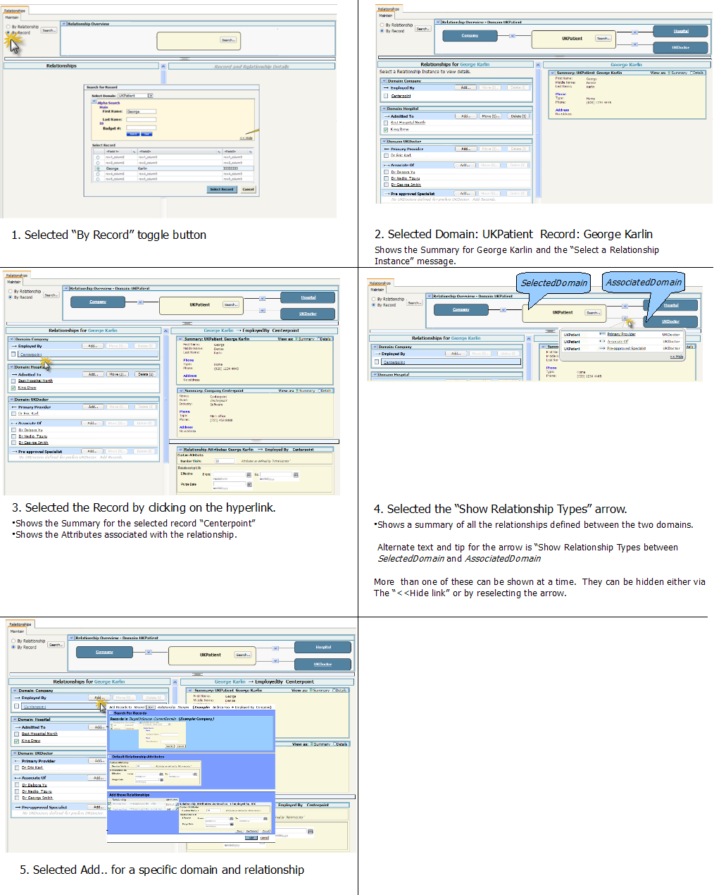

Story Board for Manage->Relationship->Maintain->By Record
This story board shows the flow of the By Record screen option. Zoom in to see details of the screens.

This page last changed on 25-Sept-2008 11:00:00 PDT by
andreakendall@dev.java.net